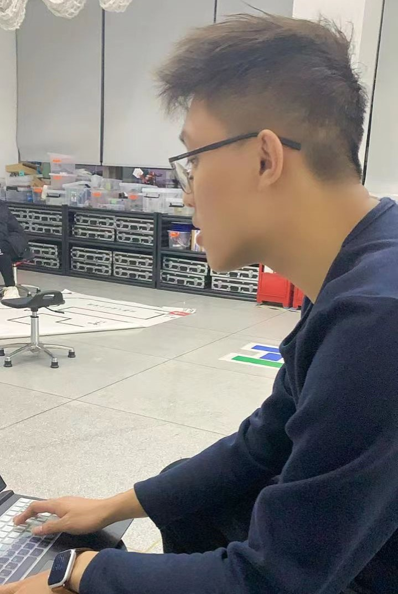
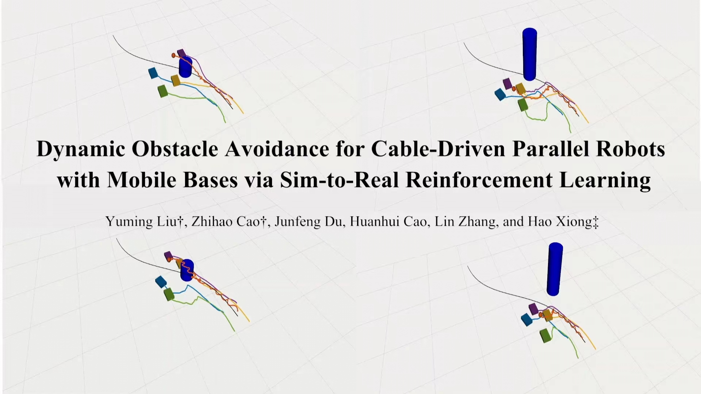

This page has been visited for
 times
times
Zhihao CAO | 曹志浩 🇨🇳Undergraduate @HIT, Shenzhen
|
 |
I am a fourth-year undergraduate student
at Harbin Institute of Technology, Shenzhen (HITSZ),
working for a B.Eng. in Automation
in the School of Mechanical Engineering and Automation (SMEA).
Previously, I am honored to be advised by Prof.
Yunjiang LOU
and Prof.
Xiaogang XIONG.
Also, I spent a wonderful time in 2022 with Prof.
Hao XIONG.
Moreover, I am pleasure to work in PaddlePaddle,
Baidu Inc.
for remote internship.
Currently,
I am working at nROS-Lab
with Prof.
Haoyao CHEN
for my Final Year Project (FYP).
Research Interets: I don't know what the future will be like, but currently, Probabilistic Robotics lights up my future.
Slide down for more information 👇
[2023/02/02] Our paper "Dynamic Obstacle Avoidance for Cable-Driven Parallel Robots With Mobile Bases via Sim-to-Real Reinforcement Learning" has been accepted by IEEE RA-L 2023.
[2022/09/28] I will join nROS-Lab, HITSZ, working with Dr. Yu WANG and Prof. Haoyao CHEN for my Final Year Project (FYP).
[2022/07/24] Today our team 南工问天 win national-level Third Prize in "ABU Asia-Pacific Robot Contest (ABU Robocon)".
[2022/05/08] I will join HITsz Robot Learning Group, HITSZ, working with Prof. Hao XIONG.
[2022/04/24] Today I get my Personal Entry, certified by Baidu Inc.
[2021/12/12] I will give an oral presentation at WAVE SUMMIT held by Baidu Inc.
[2021/12/07] I will give an oral presentation at a technical interchange meeting held by SAAI.
[2021/09/06] I will join a team, working about Parallel Quadruped Robot, under the guidance of Prof. Yunjiang LOU.
[2020/12/20] Today I get Baidu AI Star Plan awarded by Baidu Inc.
[2020/11/21] Today we win national-level Champion and Second Prize in "Robocom World Robot Developer Competition".
[2020/11/04] Today our team 南工问天 win national-level First Prize in "ABU Asia-Pacific Robot Contest (ABU Robocon)".
[2020/08/27] Today we win national-level Second Prize in "The NXP Cup National University Students Intelligent Car Race".
[2020/07/31] Today I certify as an Baidu PaddlePaddle Developers Expert by Baidu Inc.
[2020/04/01] I will join the team 南工问天 for ABU Asia-Pacific Robot Contest, working with Dr. Yunfan REN, Mr. Siqi LIANG, Prof. Yunjiang LOU and Prof. Xiaogang XIONG
Harbin Institute of Technology, Shenzhen
|
|
*: equivalent contribution, #: corresponding author.
|  |
Dynamic Obstacle Avoidance for Cable-Driven Parallel Robots with Mobile Bases via Sim-to-Real Reinforcement Learning
Yuming Liu*, Zhihao Cao*, Hao Xiong#, Junfeng Du, Huanhui Cao and Lin Zhang |
Slide down for more information 👇
Harbin Institute of Technology, Shenzhen, Shenzhen, China (Sept. 2022 - Present)
|
|
Harbin Institute of Technology, Shenzhen, Shenzhen, China (Apr. 2022 - Jan. 2023)
|
|
Harbin Institute of Technology, Shenzhen, Shenzhen, China (Apr. 2020 - Aug. 2022)
|
|
PaddlePaddle, Baidu, Beijing, China (Sept. 2020 - Jan. 2023)
|
|
Slide down for more information 👇
Friends (Ordered by Alphabets)
Di CHANG |
Junhua LIU |
Junlin HAN |
Tianyi BAI |
Wenjie QU |
Yanjie ZE
Arts. I have learned Saxophone 🎷 since 2013, and learned Painting 🎨 since 2010. I love them and enjoy it.
Sports. Maybe table tennis is more suitable for me ...
Games. I am a loyal fan of League of Legends (LOL). Also, I enjoy playing "Overwatch (OW)", "Genshin Impact", "It Takes Two", "Mario" and so on. I am a regular customer of Steam, and sometimes I like to keep in touch with my Nintendo Switch, PS5 and XBOX. Feel free to contact me to play games!
Last update: Feb. 27th, 2023